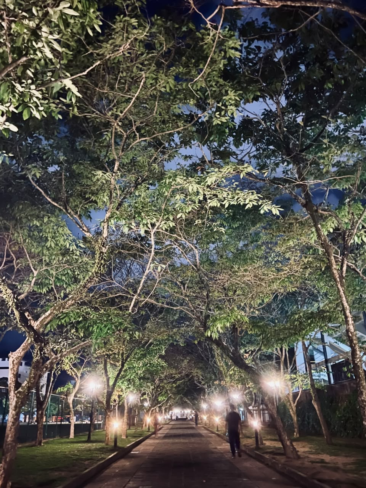
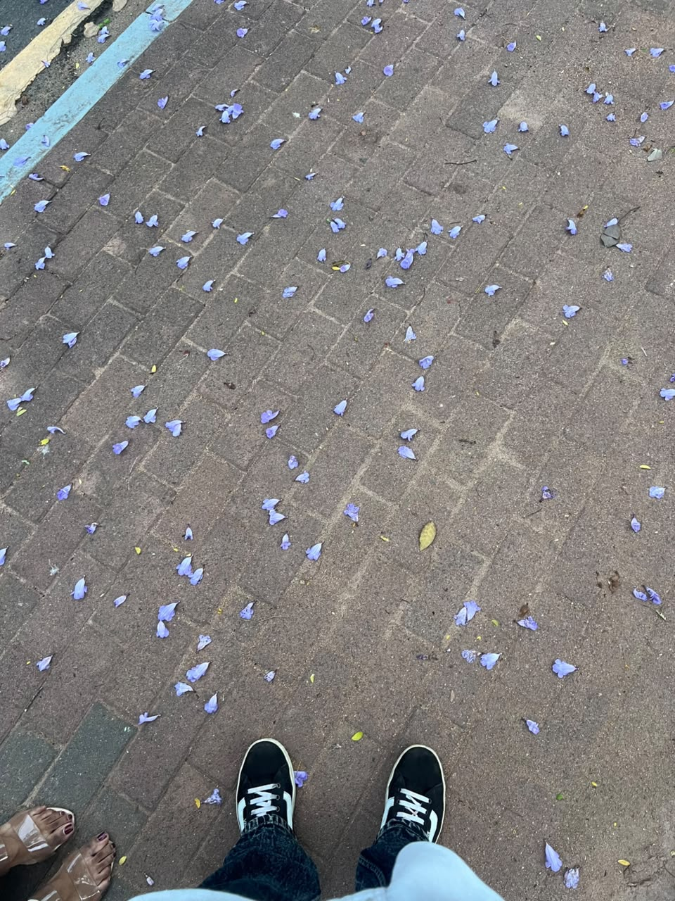

01 · Late-night talks
Laughing until our stomachs hurt.
Some of my favorite nights were the ones where we talked until morning and somehow never ran out of things to say.
A little garden, made just for you
I couldn't give you an entire garden in my hands… so I made you one here.
December 25, 2025 · 12:30 AM
It was Christmas day. You were there with your friends, and I could only see you from afar.
That crocheted overcoat. The black dress. And that completely mismatched pink shawl that somehow made you look even cuter.
When I finally came closer, I could mostly see your eyes. I knew you were a little panicked, but I wanted to talk to you while still being respectful.
One memory I keep close
You led the way, and for that moment I felt so adored by you. It was simple. But I remember how it felt.
Little pieces of us

Some of my favorite nights were the ones where we talked until morning and somehow never ran out of things to say.

And I kept that little secret in my heart because it meant more to me than I knew how to explain.
And then there are your eyes…
I don't think you know how often I notice them. There is something about them that makes everything around me feel quieter.
One last thing, Kanmani
I realized I loved you not because I could look at you carelessly, but because I could look at you with so much respect. I want you to feel safe around me, always.
And even if you hated me for a hundred years, I don't think my heart would ever learn how to hate you back.
— someone who would still choose your smile 🌺